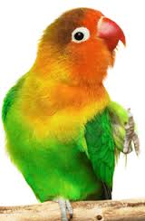

In this example, the image will float to the right in the paragraph, and the text in the paragraph will wrap around the image.
 Parrots are birds of the roughly 393 species in 92 genera that make up the order Psittaciformes, found in most tropical and subtropical regions. The order is subdivided into three superfamilies: the Psittacoidea ("true" parrots), the Cacatuoidea (cockatoos), and the Strigopoidea (New Zealand parrots). Parrots have a generally pantropical distribution with several species inhabiting temperate regions in the Southern Hemisphere, as well. The greatest diversity of parrots is in South America and Australasia. Characteristic features of parrots include a strong, curved bill, an upright stance, strong legs, and clawed zygodactyl feet. Many parrots are vividly coloured, and some are multi-coloured. Most parrots exhibit little or no sexual dimorphism in the visual spectrum. They form the most variably sized bird order in terms of length. The most important components of most parrots' diets are seeds, nuts, fruit, buds, and other plant material. A few species sometimes eat animals and carrion, while the lories and lorikeets are specialised for feeding on floral nectar and soft fruits. Almost all parrots nest in tree hollows (or nest boxes in captivity), and lay white eggs from which hatch altricial (helpless) young.